This page brings together basic information about the Odia (Oriya) script and its use for the Odia language. It aims to provide a brief, descriptive summary of the modern, printed orthography and typographic features, and to advise how to write Odia using Unicode.
The Oriya script is the official orthography used to write the Odia language of the Odisha (Orissa) state in India, as well as minority languages such as Khondi and Santali, and a number of Dravidian and Munda minority languages spoken in that region.u,487 It is also used in Orissa for transcribing Sanskrit texts.
ଓଡ଼ିଆ ଅକ୍ଷର
The Oriya script is a descendant of the Brahmi script, via Siddham. Earliest recorded instances of the script go back to the 11thC. The language was initially written in the Kalinga script, from which the Oriya script developed.
The rounded shapes of the letters, especially the top bar, are ascribed to the practise of writing on palm leaves, where rounded lines are less likely to split the leaf than straight ones.
A cursive version of the script, called Karani (କରଣୀ ଅକ୍ଷର), was used by scribes in the royal courts.
The language and script were previously referrred to in English as Oriya, but in 2011 India changed the spelling to Odia in the constitution.sl11
The Odia script is an abugida. Consonants carry an inherent vowel which can be modified by appending vowel signs to the consonant. See the table to the right for a brief overview of features for the modern Odia orthography.
Odia runs left to right in horizontal lines. Words are separated by spaces.
The 36 consonant letters used for Odia include repertoire extensions for 2 sounds by applying the nukta diacritic to characters. There are 2 additional, newer characters used for w and v.
Consonant clusters are most commonly rendered usingsubjoined forms, usually for the second character, but sometimes for the initial. Certain clusters use fused forms, and a couple are conjoined. A visible virama is used for borrowed words. Initial RA is rendered as a reph over the top right of the following consonant.
Syllable-final consonant sounds may be represented by 2 dedicated combining marks (anusvara & visarga). Velar consonant cluster initials may be written either using a regular character or using anusvara.
In principle, there are no multipart vowels, however the 2 circumgraphs are decomposed into 2 parts each.
Vowels have short lengths only, although there are vestigial orthographic letters for long sounds that now represent alternatives for the short sounds.
Vowels may be nasalised, using the candrabindu diacritic.
This is the full set of characters needed to represent the vowels of the Odia language.
ଅ␣ଆ␣ଇ␣ଈ␣ଉ␣ଊ␣ଏ␣ଐ␣ଓ␣ଔଁ␣ା␣ି␣ୀ␣ୁ␣ୂ␣େ␣ୈ␣ୋ␣ୌ
Inherent vowel
କ
kɔU+0B15 ORIYA LETTER KA
ɔ following a consonant is not written, but is seen as an inherent part of the consonant letter, so kɔ is written by simply using the consonant letter. This vowel sound is transcribed as a.d
Vowels after consonants
Post-consonant vowels are written using 9 combining marks (vowel signs). There is 1 pre-base form, and 3 circumgraphs.
In principle, there are no multipart vowels, however the 2 circumgraphs are decomposed into 2 parts each.
Vowels have short lengths only, although there are vestigial orthographic letters for long sounds that now represent alternatives for the short sounds.
Vowels may be nasalised, using the candrabindu diacritic.
Vowel signs
କି
kiU+0B15 ORIYA LETTER KA + U+0B3F ORIYA VOWEL SIGN I
Odia uses the following dedicated combining marks for vowels.
ି␣ୀ␣ୁ␣ୂ␣େ␣ୋ␣ା␣ ␣ୈ␣ୌ
The 'primary' vowels have 'short' and 'long' written forms that hark back to the earlier Indic script origins, but modern Odia phonetics don't distinguish between long and short vowel sounds.
Six vowel signs are spacing marks, meaning that they consume horizontal space when added to a base consonant.
All vowel signs are stored after the base consonant, and the rendering process puts them in the correct place for display. This also applies for the pre-base vowel sign, and the 3 circumgraphs (where a single code point produces glyphs on more than one side of the consonant base).
An orthography that uses vowel signs is different from one that uses simple diacritics or letters for vowels in that the vowel signs are generally attached to the orthographic syllable, rather than just applied to the letter of the immediately preceding consonant. This means that pre-base vowel signs and the left glyph of circumgraphs appear before a whole consonant cluster if the cluster is rendered as a conjunct (see prebase_vowels).
See also the 2 lengthening marks, which may occur in decomposed text.
Other symbols used for vowels
The following 'lengthening marks' may be used to create vowel sounds as part of a decomposed circumgraph, although the Unicode Standard recommends the use of the precomposed forms.
When an orthographic syllable begins with a consonant cluster that is rendered as a conjunct, the vowel sign is rendered before the start of the cluster, eg. fig_prebase shows 3 sets of consonant clusters, each followed by e when spoken, but the vowel sign appears to the left of each cluster.
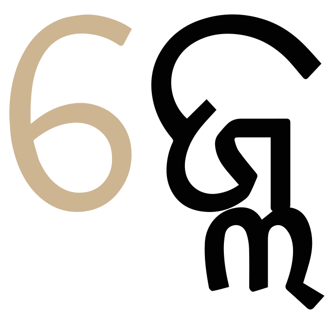
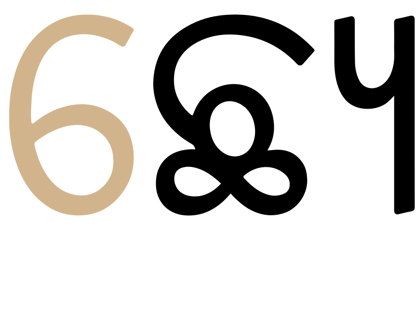
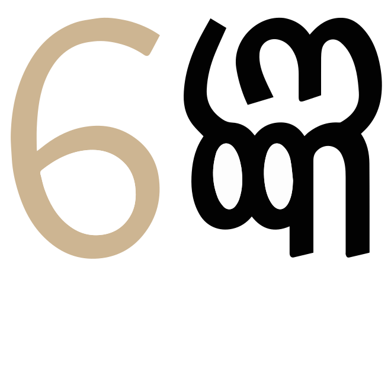
Three examples of a prebase vowel, pronounced after a consonant cluster, but rendered to the left of the conjunct.
Circumgraphs
କୋ
keU+0B15 ORIYA LETTER KA + U+0B4B: ORIYA VOWEL SIGN O
ୋ␣ ␣ୈ␣ୌ
Three vowels are produced by a single combining character with visually separate parts, that appear on different sides of the consonant onset.
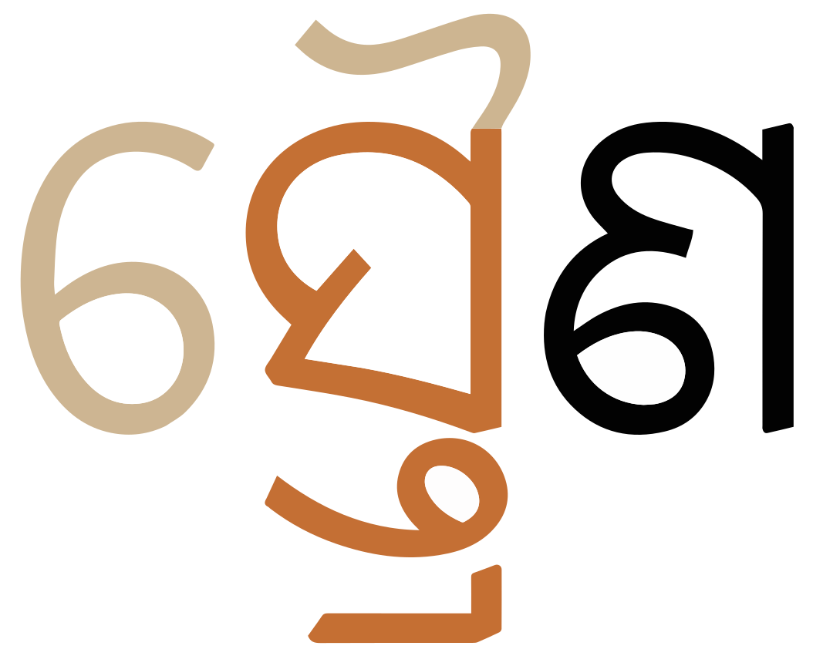
A circumgraph vowel: a single code point with glyphs on two sides of the consonant cluster after which it is pronounced.show composition
ସ୍ତ୍ରୈଣ
All 3 of these circumgraphs can be written as a single character, or as two. See vs_encoding.
Vowel length
Oriya doesn't mark vowel length.
Nasalisation
ଁ
Vowels may be nasalised using ଁ or ଂ.
ଁ used to nasalise the u sound.show composition
ମୁଁହ
Where 2 vowels appear together, the nasalisation sign is rendered above the second, eg.
ଜ୍ୱାଇଁ
Standalone vowels
Odia represents standalone vowels using a set of independent vowel letters. The set includes a character to represent the inherent vowel sound, ɔ.
ଇ␣ଈ␣ଉ␣ଊ␣ଏ␣ଓ␣ଅ␣ଆ␣ ␣ଐ␣ଔ
Consonants with no following vowel
୍
Odia uses 0B4D, called halant, (the Odia equivalent of the Sanskrit virama) to indicate that the inherent vowel is not pronounced after a consonant, eg. the following explicitly represents just the sound k.କ୍k͓
Word-final consonants without a following inherent vowel use the halant, If there is no halant, the vowel is pronounced, eg. compare
ଫୁଲଇ-ମେଲ୍
Consonant clusters also use this character, but if the cluster forms a conjunct then the virama is not rendered visibly (see clusters).
Vowel sounds to characters
This section maps Odia vowel sounds to common graphemes in the Oriya orthography.
The left column shows dependent vowels, and the right column independent vowel letters.
Click on a grapheme to find other mentions on this page (links appear at the bottom of the page). Click on the character name to see examples and for detailed descriptions of the character(s) shown.
Plain vowels
i
0B3F କିପରି
0B40 ନାରୀ
0B07 ଇଟା
0B08 ଗାଈ
u
0B41 କୁହୁଡ଼ି
0B42 ମୂଳ
0B09 ଉଟ
0B0A ଊତ୍ତୋଳନ
e
0B47 ମେଘ
0B0F ଏଗାର
o
0B4B ପୋଲ
0B13 ଓଡ଼ିଆ
ɔ
Inherent vowel.
0B05 ଅଣ୍ଡା
a
0B3E ନାରୀ
0B06 ଆଠ
Diphthongs and other combinations
ɔi
0B48 ସ୍ତ୍ରୈଣ
0B10 ଐରାଵତ
ɔu
0B4C ଚୌଦ
0B14 ଔଷଧ
Nasalisation
̃
ଁ
ମୁଁହ
ଂ
ସିଂହ
Vocalics
ୃ
Only one vocalic is regularly used, in vowel sign form, in modern Odia.
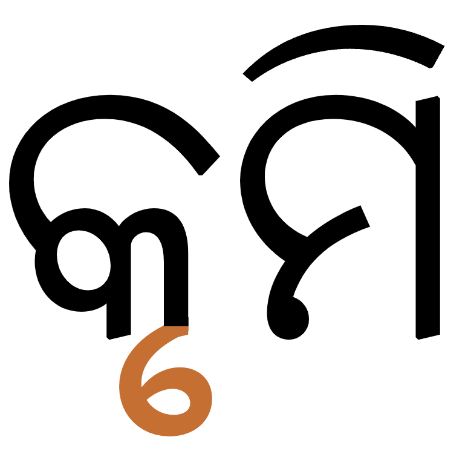
A vocalic vowel sign.show composition
କୃମି
Other vocalics exist in the script, in independent and vowel sign forms, but are used for Sanskrit transcriptions.
ଋ␣ୠ␣ୄ␣ଌ␣ୢ␣ୡ␣ୣ
Consonants
Consonant summary table
The following table summarises the main consonant to character assignments.
Whereas the table just above takes you from sounds to letters, the following simply lists the basic consonant letters (however, since the orthography is highly phonetic there is little difference in ordering).
The velar and palatal nasals only occur in homorganic clusters.d,406
କ୍ଷ is regarded as a letter of the alphabet.
wa and va
The letters 0B71 and 0B35 were added to Unicode version 4.
The subjoined forms of 0B71 and 0B2C may look the same. For a discussion of the possible historical relationship between these characters see Everson/Stonee02.
Observation: The Library of Congress transcription page says that when
ବ
[U+0B2C ORIYA LETTER BA] occurs as the second consonant of a consonant cluster (except when geminated), it is transliterated vloc. It appears, however, that it also keeps the b sound after the letters m and r.
0B35 is described by Wiktionary as "used sporadically for the phonetic Va/Wa as an alternative for the officially recognised letter ୱ, but has not gained widespread acceptance".
Repertoire extension using nukta
The sounds ɽ and ɽʰ are written by combining 0B3C with an existing consonant.
ଡ଼␣ଢ଼
The nukta should always be typed and stored immediately after the consonant it modifies, and before any combining vowels or diacritics.
Unicode also has precomposed forms of these letters, but they decompose under Unicode Normalisation Form C (NFC). Therefore, the Unicode Standard recommends the use of the decomposed sequence.
ଡ଼␣ଢ଼
The nukta may also be used to produce other non-native sounds. Wiktionary describes the following:
0B15 0B3C for q.
0B16 0B3C for x.
0B1D 0B3C for ʒ.
0B37 0B3C for ɻ.
Onsets
Clusters of consonant letters at the beginning of an orthographic syllable occur in Odia, and they are handled as described in the section clusters.
Special behaviours include handling of RA at the beginning of an orthographic syllable (see rconjuncts).
Finals
ଂ␣ଃ
A syllable-final nasal sound can be written using 0B02, eg.
ଜଂତୁଜଂଗଲଏବଂ
It is optional whether the nasal sound is written using anusvara or by using a conjunct. fig_anusvara shows two ways of writing ଅଂକ.u,488
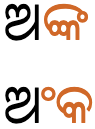
The sound ɔŋkɔ written using a conjunct (top) and using anusvara followed by KA (bottom).
A word-final h consonant can also be written using 0B03.n,54 (In the middle of a word, it creates a geminated consonant.)
Observation: According to Wikipedia, that sound is a h, but according to Nakanishi it is a glottal stop.
Consonant clusters
The absence of a vowel sound between two or more consonants is visually indicated in one of the following ways.
Create a conjunct. There are a number of possibilities here:
Stacking : Reduce a non-initial consonant in size and shape and position it below the first.
Conjoining : The two consonants sit side by side, but the second consonant has a special shape.
Ligation : Create a fusion of the letter shapes, where it may be difficult to identify one or more of the components.
The letter RA has its own idiosyncratic way of combining with other consonants, whether it precedes or follows them.
Show a visible virama below the non-final consonants in the cluster.
In Unicode, conjunct formation is achieved by adding 0B4D between the consonants. The font hides the virama glyph automatically when a conjunct is formed.
Stacking
The overwhelming majority of conjuncts in Odia are achieved by subjoining a reduced form of the non-initial consonant below the initial.
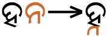
ɦnɔ
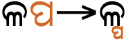
ɭpɔ
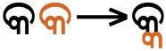
kkɔ
Examples of stacked conjuncts.
In most cases the non-initial consonant is just reduced in size, but in some cases the shape is changed, either by removing the circular top line, or in a more fundamental way.
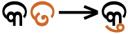
ktɔ
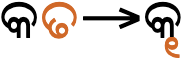
kɖɔ
Stacked conjuncts where the subjoined shape is significantly different from the normal shape.
However, when TA is the initial consonant, it is sometimes the initial that is reduced and subjoined. In other combinations, however, it retains its full form.
tkɔ
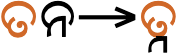
tnɔ
Stacked conjuncts with an initial TA. The TA may be subjoined in some combinations.
RA in clusters
A trailing RA has a fairly regular appearance as a subjoined glyph below the preceding consonant, although that line may join with the preceding letter shape, and therefore cause a slight change to it.
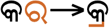
krɔ
A trailing RA in a cluster is rendered as a subjoined glyph.
However, like many other Indian scripts, 0B30 at the beginning of a cluster is represented idiosyncratically, and appears as a small, superscript glyph over the top right of the following consonant.
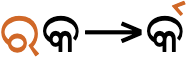
rkɔ
An initial RA in a cluster is rendered as a superscript over the following consonant.
Observation: Unlike Devanagari, it appears that the RA doesn't move over a following vowel sign, such as ା [U+0B3E ORIYA VOWEL SIGN AA].
Ligated forms
Certain combinations of consonants form conjuncts by producing a merged glyph one or both of the original letters may be unrecognisable.
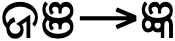
d͡ʒɲɔ
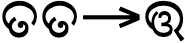
ttɔ
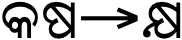
kʰjɔ
Clusters that fuse into forms different from their original component shapes.
The following is a list of combinations that produce such an effect. Click on the items to see the component letters.
Three letters in particular tend not to stack, but sit alongside the initial consonant in the cluster.
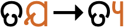
td͡ʒɔ
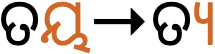
tjɔ
Conjoined letters for the clusters tʤ, and tj, respectively (top to bottom).
As can be seen above, the conjoined forms for ʤ and j are identical.
The letter NYA also sits alongside the cluster initial, but the halanta may be shown below the initial letter.
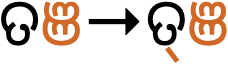
tɲɔ
A consonant cluster that shows a visible virama, rather than creating a conjunct.
Observation: Noto, Nirmala, and Kangila fonts all show the halanta below the initial consonant in the first example at fig_conjoined, but Oriya MN and Oriya Sangam MN fonts don't show it.
The halanta is also left showing for borrowed words.d,404 The halanta can be made visible by following it with 200C.
Triple-consonant clusters
Oriya has a number of clusters involving 3 consonants. For example, the following words contain triple-consonant clusters. As always, click on the example to see the composition.
ପୂର୍ଣ୍ଣତୀକ୍ଷ୍ଣଚନ୍ଦ୍ର
Consonant length
ଃ
Geminated consonants in the middle of a word can be written using 0B03,n,54 eg. ଦୁଃଖ
Consonant sounds to characters
This section maps Odia consonant sounds to common graphemes in the Oriya orthography. Sounds listed as 'infrequent' are allophones, or sounds used for foreign words, etc.
Click on a grapheme to find other mentions on this page (links appear at the bottom of the page). Click on the character name to see examples and for detailed descriptions of the character(s) shown.
p
ପ
ପଦ୍ମ
pʰ
ଫ
ଫଳ
b
ବ
ବିଭ୍ରାଟ
bʰ
ଭ
ଭିଜା
t
ତ
ତିନି
tʰ
ଥ
ଥଣ୍ଡା
t͡ʃ
ଚ
ଚଟିଆ
t͡ʃʰ
ଛ
ଛଅ
d
ଦ
ଦୁଇ
dʰ
ଧ
ଧୂଳି
d͡ʒ
ଜ
ଜହ୍ନ
ଯ
ଯକୃତ
d͡ʒʰ
ଝ
ଝାଡୁ
ʈ
ଟ
ଟାପୁ
ʈʰ
ଠ
ଠିକ
ɖ
ଡ
ଡାଲମା
ɖʰ
ଢ
ପଢିବା
k
କ
କାନ
kʰ
ଖ
ଖାଇବା
kʰj
କ୍ଷ
ଅକ୍ଷର
ɡ
ଗ
ଗାଈ
ɡʰ
ଘ
ଘର
q
କ଼ Used for loan words.
s
ସ
ସାପ
ଷ
ତୁଷାର
ଶ
ଶାର୍ଟ
ʒ
ଝ଼ Used for loan words.
x
ଖ଼ Used for loan words.
h
ଃ when word-final.
ɦ
ହ
ହସିବା
m
ମ
ମହିଳା
n
ନ
ନଦୀ
ɲ
ଞ
ପାଞ୍ଚ
ɳ
ଣ
କାରଣ
ŋ
ଙ
ରଙ୍ଗ
w
ୱ
ଦ୍ୱାର
ʋ
ଵ
ଵିଷ୍ଣୁ
r
ର
ରସି
ru
ୃ
କୃମି
ଋ
ଋତୁ
ɽ
ଡ଼
ଓଡ଼ିଆ
ɽʰ
ଢ଼
ଦାଢ଼ି
ɻ
ଷ଼ Used for loan words.
l
ଲ
ଲାଲ
ɭ
ଳ
ମୂଳ
j
ୟ
ବାୟୁ
Symbols
Deceased honorific.0B70 is used before the name of a deceased person.
Om.The symbol for the word Om is produced using 0B13 0B01. It also occurs as a ligated form. If the font doesn't produce the ligated form automatically, the font may produce it if 200D is inserted between the two characters.
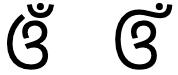
A non-ligated combination of O+CANDRABINDU (left) and a ligated form using ZERO WIDTH JOINER (right)..
Encoding choices
Visually, several of the standalone vowels and some vowel signs look as if they could be composed of smaller parts. This section compares approaches and considers the relevance of Unicode Normalisation Form D (NFD) and Unicode Normalisation Form C (NFC) to give guidance on which approach is best.
Encoding vowel-signs
The three circumgraphs can be written as a single character, or as two characters. In 2 of those cases, the second character is a lengthening mark.
Whichever approach is used, the vowel signs must be typed and stored after the consonant characters they surround, and in left to right order.
Independent vowels
The approach listed in the table below is not equivalent when the text is normalised, and therefore only the precomposed approach in the left column should be used.u,487
Use
Do not use
0B06
0B05 0B3E
0B10
0B0F 0B57
0B14
0B13 0B57
In addition to the problem previously mentioned, combinations on rows 2 and 3 don't have the joining bar and so won't display correctly.
Numbers
Digits
Odia has its own set of native digits.
୧␣୨␣୩␣୪␣୫␣୬␣୭␣୮␣୯␣୦
The CLDR standard-decimal pattern is #,##,##0.###. The standard-percent pattern is #,##,##0%.c
ASCII digits may also be used.msg
Fractions
Odia also has a number of pre-decimal characters representing fractions.
୲␣୳␣୴␣୵␣୶␣୷
These are used additively, with larger values appearing before smaller, eg. 0B73 0B75 represents the value 5/16.u,490
The following is a selection of other examples of contextual shaping and positioning.
Positioning u in clusters. When a below-base vowel sign occurs with a cluster with a conjoined form it is attached to the larger glyph, rather than to the consonant it actually follows in memory and speech, eg.
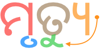
The arrow points from where the sound u is pronounced to the position the vowel sign is displayed in the word ମୃତ୍ୟୁ.show composition
ମୃତ୍ୟୁ
Position & shape of i. After a certain consonant glyphs, in some fonts, the vowel sign for i appears in a different position and with a different shape. The first example in the table below shows the typical shape.
Composition
Example
ସି
0B38 0B3F
ପ୍ରସିଦ୍ଧି
ସ୍ଥି
0B38 0B4D 0B25 0B3F
ଅସ୍ଥି
ଥି
0B25 0B3F
ପୃଥିବୀ
Other glyph variants.Nakanishi lists a number of alternative shapes for glyphs.
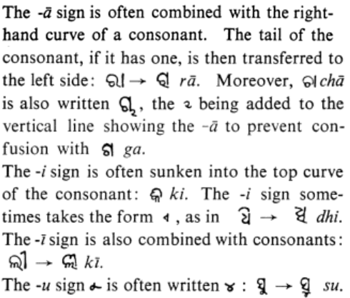
Description of glyph variants from Nakanishi, p54.
Explicit shaping controls
200C (ZWNJ) can be used to force the production of a visible virama, rather than a conjunct form.
200D (ZWJ) is used to produce a ligated version of OM (see symbols).
Typographic units
Word boundaries
Words are separated by spaces.
Hyphens may be used to separate parts of a compound word,msg,40 eg. ଡ୍ରପ୍-ଡାଉନ୍
Graphemes
Grapheme clusters
Usually a typographic character unit correlates with the Unicode concept of grapheme clusters, but not in the case of conjuncts (in common with several other Indic scripts).
Conjuncts
Conjuncts and any dependent combining characters should never be split.
This creates a problem when dealing with Unicode grapheme clusters, because they stop after reaching a virama. So conjuncts usually contain multiple grapheme clusters. This produces incorrect segmentation as seen on the right in fig_grapheme_conjunct. Applications need to tailor the grapheme cluster rules to avoid splitting conjuncts.
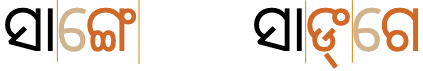
Segmentation of the word ସାଙ୍ଗେ as it should be (left), and how it would be if grapheme clusters are used as the maximal unit (right).show composition
ସାଙ୍ଗେ
Unfortunately, this is harder than it seems, because whether a conjunct is formed or not usually depends on the capabilities of the font – it cannot be determined solely by looking at the code points in memory. If a font doesn't contain the glyphs to create a conjunct it will render the consonant cluster with a visible virama. In that case, the grapheme cluster approach is appropriate.
Punctuation & inline features
Phrase & section boundaries
,␣;␣:␣.␣?␣!␣।␣॥
Odia uses a combination of ASCII and native punctuation.
phrase
002C
003B
003A
sentence
002E
003F
0021
0964
section
0965
0964 and 0965 are from the Unicode Devanagari block. Odia uses a space before these punctuation marks, which avoids confusion with 0B3E, eg.
… ଲୋପ ପାଇଗଲା ।
Bracketed text
(␣)
Odia commonly uses ASCII parentheses to insert parenthetical information into text.
start
end
standard
0028
0029
0028 and 0029 are used for parentheses.msg
Quotations & citations
“␣”␣‘␣’
Odia texts typically use quotation marks around quotations. Of course, due to keyboard design, quotations may also be surrounded by ASCII double and single quote marks.
start
end
initial
201C
201D
nested
2018
2019
Single quotation marks are used for quotations within quotations.
Abbreviation, ellipsis & repetition
Abbreviations
Odia abbreviations use a period after the first syllable, but sometimes include more than one syllable,msg,45 eg.
ବଶେଷ୍ୟ → ବ.ଉଦାହରଣ → ଉ.ଦା.
Ellipsis
Odia uses 2026 for ellipsis,msg,40 eg. ଆଇକନ୍ ପରିବର୍ତ୍ତନ କରନ୍ତୁ…
In Sanskrit, 0B3D is used to indicate elision,ws eg. ଦ୍ୱିତୀୟୋଽଧ୍ୟାୟଃ
Other inline features
Other punctuation
CLDR lists the following non-ASCII punctuation marks for Odia.
‐␣‑␣–␣—␣†␣‡␣′␣″
Line & paragraph layout
Line breaking & hyphenation
Lines are mostly broken at inter-word spaces.
Like most writing systems, certain characters are expected not to start or end a line. For example, periods and commas shouldn't start a line, and opening parentheses shouldn't end a line.
Odia uses the so-called 'alphabetic' baseline, which is the same as for Latin and many other scripts.
Counters, lists, etc.
You can experiment with counter styles using the Counter styles converter. Patterns for using these styles in CSS can be found in Ready-made Counter Styles, and we use the names of those patterns here to refer to the various styles.
The oriya numeric style is decimal-based and uses these digits.rmcs